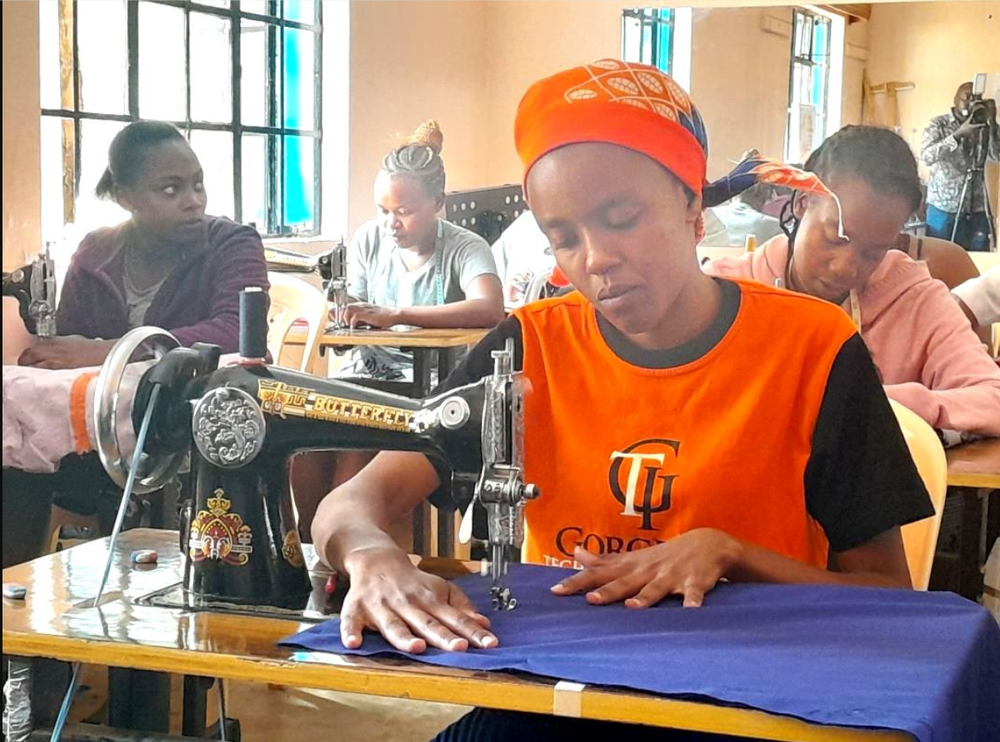
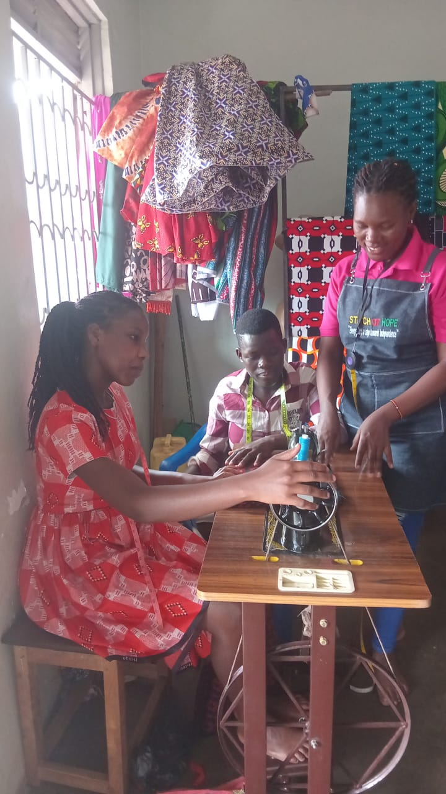
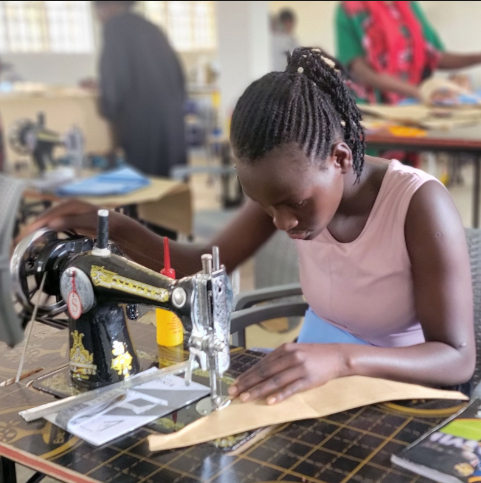
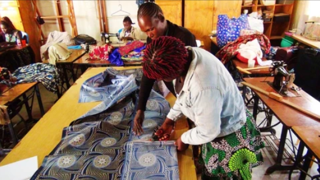

Hands-on learning
Structured training equips learners with usable tailoring and design skills that create immediate pathways to income.

TAILORING • FASHION • DESIGN • EMPOWERMENT
A community-rooted tailoring, fashion and design skill training centre empowering teenage mothers, school dropouts, orphans, people lacking parental support and persons with disabilities in Northern Uganda.

WHY IT MATTERS
Structured training equips learners with usable tailoring and design skills that create immediate pathways to income.
We centre teenage mothers, school dropouts, orphans, and persons with disabilities in a compassionate, practical model.
Each learner gains skills, guidance, and enterprise support that can transform survival into sustainable independence.


